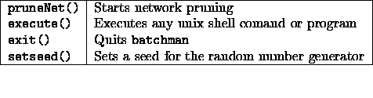
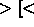

snnsbat runs very dependably even on unstable system configurations and is secured against data loss due to system crashes, network failures etc.. On UNIX based systems the program may be terminated with the command 'kill -15' without loosing the currently computed network.
The calling syntax of snnsbat is:
snnsbat configuration_file

log_file
This call starts snnsbat in the foreground. On UNIX systems the
command for background execution is `at', so that the command line
echo 'snnsbat default.cfg log.file' at 22:00 would
start the program tonight at 10pm .
.
If the optional file names are omitted, snnsbat tries to open the configuration file `./snnsbat.cfg' and the protocol file `./snnsbat.log'.